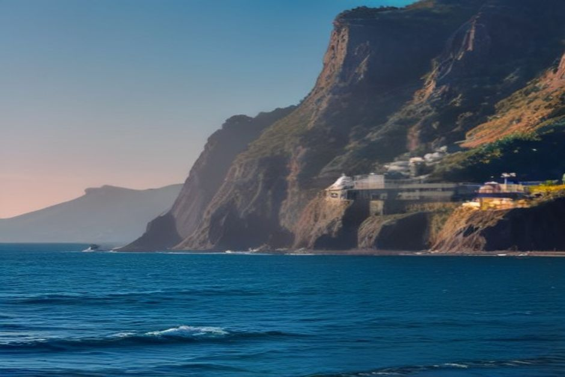
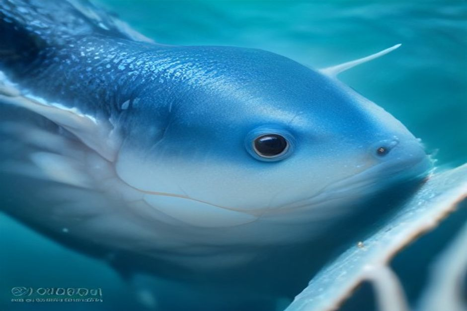

Fliegende Fische, Delfine, Grindwale, vielleicht eine Schildkröte: Wer nach Madeira fährt, fragt sich schnell, welche Fische und Meerestiere es hier gibt und was davon man ohne Expedition zu sehen bekommt. Die kurze Antwort: erstaunlich viel, denn der Meeresboden fällt wenige Seemeilen vor Funchal von einem schmalen Schelf auf über 3.000 Meter ab. Diese Liste ordnet die Tiere nach Wahrscheinlichkeit, nicht nach Effekt, damit Sie mit realistischen Erwartungen planen können.
Das Wichtigste vorab
Madeira ist kein Zoo, und kein seriöser Anbieter kann eine Sichtung versprechen. Aber manche Tiere sind so häufig, dass Sie auf einer Fahrt entlang der Südküste gute Chancen haben, und andere sind eine Zugabe, über die Sie sich freuen, wenn sie passiert.
- Häufig, das ganze Jahr: Große Tümmler, Gewöhnliche Delfine, Kurzflossen-Grindwale.
- Vor allem im Sommer: Karettschildkröten, Atlantische Fleckendelfine (Juni bis September), Mantarochen in den wärmeren Monaten.
- Selten: Pottwale, meist im Frühling und Herbst gemeldet.
- Nur mit eigenem Ausflug: Mönchsrobben bei den Desertas-Inseln.
- Bei ruhiger See fast sicher: Fliegende Fische.
Fliegende Fische: der Klassiker bei ruhiger See
Viele Gäste suchen zuerst nach „fliegende Fische Madeira“, und das zu Recht. Bei glatter See schnellen die Tiere aus dem Wasser und gleiten auf ausgebreiteten Brustflossen 20 bis 30 Meter weit, bevor sie wieder eintauchen. Es ist ein kurzes, silbriges Aufblitzen, das die meisten Erstbesucher hier nicht erwarten.
Tipp: Schauen Sie nicht direkt vor den Bug, sondern ein Stück seitlich auf die Wasserfläche. Je ruhiger das Meer, desto größer die Chance.

Delfine vor Madeira: drei Arten, eine Küste
Große Tümmler
Sie sind die häufigste Sichtung vor Funchal, oft in Gruppen von 20 bis 80 Tieren. Tümmler sind neugierig und kommen häufig von selbst an ein Boot, um auf der Bugwelle zu reiten. Sie bleiben länger, wenn der Motor abgestellt ist.
Gewöhnliche Delfine
Schneller und akrobatischer als die Tümmler, in großen, manchmal riesigen Gruppen unterwegs. Sie sind ganzjährig da und sorgen meist für die lebhafteste Begegnung einer Fahrt.
Atlantische Fleckendelfine
Diese Art sehen Sie vor allem von Juni bis September. Erwachsene erkennen Sie an den grau-weiß gesprenkelten Flanken, Jungtiere sind einfarbig grau und bekommen ihre Flecken erst mit dem Alter.
Wale: Grindwale fast immer, Pottwale selten
Der Kurzflossen-Grindwal ist der Wal, der auf Madeira zu Hause ist. Er lebt das ganze Jahr in Familienverbänden von 10 bis 30 Tieren, zieht langsam umher und ruht lange an der Oberfläche. Deshalb lässt er sich besser beobachten als jeder andere Wal der Liste: Ein leises Boot mit abgestelltem Motor kann minutenlang neben einer ruhenden Gruppe treiben.
Der Pottwal, der größte Zahnwal der Erde, ist dagegen die seltenste Walsichtung. Er zieht auf seiner Wanderung vorbei, am häufigsten im Frühling und Herbst gemeldet. Wenn einer auftaucht, liegt er meist bewegungslos an der Oberfläche, bevor er zu einem Tieftauchgang ansetzt, der bis zu 30 Minuten dauern kann. Planen Sie ihn nicht ein, nehmen Sie ihn als Geschenk.
Schildkröten und Mantarochen: die Sommergäste
Karettschildkröten kommen den ganzen Sommer über zum Atmen an die Oberfläche. Ein ruhiges, treibendes Boot stört sie erstaunlich wenig, an einem stillen Tag sind Begegnungen aus wenigen Metern möglich. Meist sehen Sie sie ruhend an der Oberfläche, seltener aktiv schwimmend.
Mantarochen sind eine gelegentliche, aber unvergessliche Sichtung in den wärmeren Monaten. Man erkennt sie, wenn ihre flügelartigen Brustflossen beim Fressen nahe der Oberfläche das Wasser durchbrechen. Sie sind viel weniger vorhersehbar als Delfine oder Grindwale.
Fische in den Buchten: Lippfische, Papageifische, Muränen
Wer „Fische Madeira“ sucht, denkt oft an das Schnorcheln, nicht an die Hochsee. Auch das lohnt sich: In den Buchten zwischen Funchal und Cabo Girão sehen Sie Schwärme von Lippfischen und Papageifischen, gelegentlich eine Muräne zwischen den Felsen. Den größten Teil des Jahres ist das Wasser klar genug, um all das mit Maske und Schnorchel von der Oberfläche aus zu beobachten.
Genau dafür ist der Badestopp im Tagesausflug mit Fajã dos Padres gedacht. Es ist die verlässliche, alltägliche Begegnung zwischen den seltenen Hochsee-Sichtungen.

Mönchsrobben: nur mit eigenem Tagesausflug
Etwa 25 bis 30 Mittelmeer-Mönchsrobben leben rund um die Desertas-Inseln, ein streng geschütztes Naturreservat etwa 22 Seemeilen südöstlich von Funchal. Sie sind deshalb das einzige Tier dieser Liste, das Sie auf einer normalen Küstentour nicht sehen. Sichtungen bleiben den ganztägigen Desertas-Ausflügen lizenzierter Anbieter vorbehalten, und selbst dann ist eine Nahbegegnung nie garantiert. Chifbay fährt diese Strecke nicht: Unsere Touren führen entlang der Südküste.
Wann ist die beste Zeit?
- Das ganze Jahr: Tümmler, Gewöhnliche Delfine und Grindwale.
- Juni bis September: zusätzlich Fleckendelfine, dazu Schildkröten im Sommer.
- Frühling und Herbst: die Monate, in denen Pottwale am häufigsten gemeldet werden.
- Ruhige See: wichtiger als jeder Monat, sowohl für Fliegende Fische als auch für Schildkröten.
Rechnen Sie also nicht mit einer „Saison“ für alles. Wer im Winter kommt, sieht Delfine und Grindwale ebenso gut. Wer im Sommer kommt, hat mehr Arten zur Auswahl.
So sehen Sie mehr: Tipps für die Bootsfahrt
- Ein kleines, leises Boot kann den Motor abstellen und neben ruhenden Tieren treiben. Das ist der größte Unterschied zu großen Ausflugsschiffen.
- Frühe oder späte Fahrt: Wenn der Wind nachlässt, wird das Wasser glatter und Sichtungen werden leichter.
- Geduld: Tiere folgen keinem Fahrplan. Manche Fahrten bringen viel, andere wenig.
- Abstand: Verhalten Sie sich ruhig, werfen Sie nichts ins Wasser und lassen Sie die Tiere entscheiden, ob sie näher kommen.
Manche dieser Tiere sehen Sie auf jeder Fahrt. Andere sind Sie froh, einmal im Leben gesehen zu haben. Genau das macht das Wasser vor Madeira so lohnenswert.
Tierbeobachtung mit Chifbay ab Funchal
Für die meisten Sichtungen dieser Liste brauchen Sie keine Spezialexpedition. Grindwale, beide häufigen Delfinarten, Schildkröten, Fliegende Fische und das Riffleben nahe der Küste gehören zum selben Abschnitt der Südküste, den eine kurze private Bootstour ab Funchal ohnehin abdeckt.
Chifbay fährt mit einem Boot nur für Ihre Gruppe, bis zu 5 Gäste, mit zwei lizenzierten Skippern aus Madeira. Treffpunkt ist die Marina do Funchal, Steg C. Die Preise gelten immer für das ganze Boot:
- Tagesausflug (Abfahrt 10:00 oder 14:00): 2 Std. 30 Min. bis Ribeira Brava für 500 EUR, oder 3 Std. weiter bis Ponta do Sol für 600 EUR. Mit Câmara de Lobos, Cabo Girão, Badestopp und Paddleboards an der Fajã dos Padres.
- Sonnenuntergangsfahrt (Abfahrt 1 Std. 15 Min. vor Sonnenuntergang, ganzjährig): 2 Std. bis Cabo Girão für 400 EUR, oder 2 Std. 30 Min. bis Ribeira Brava für 500 EUR. Ohne Badestopp.
Essen und Getränke an Bord, ein 360°-Video mit der Insta360, Drohnenaufnahmen (wetterabhängig) und Fotos mit einer echten Kamera sind bei jeder Tour dabei. Bis 24 Stunden vor Abfahrt stornieren Sie kostenlos. Delfine und Wale können wir nicht versprechen, sie sind ein Geschenk, wenn sie kommen. Mehr zu den Touren finden Sie unter Erlebnisse, praktische Hinweise unter Praktische Infos.